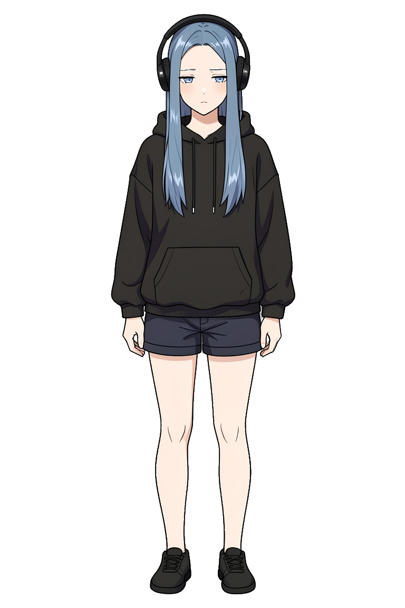
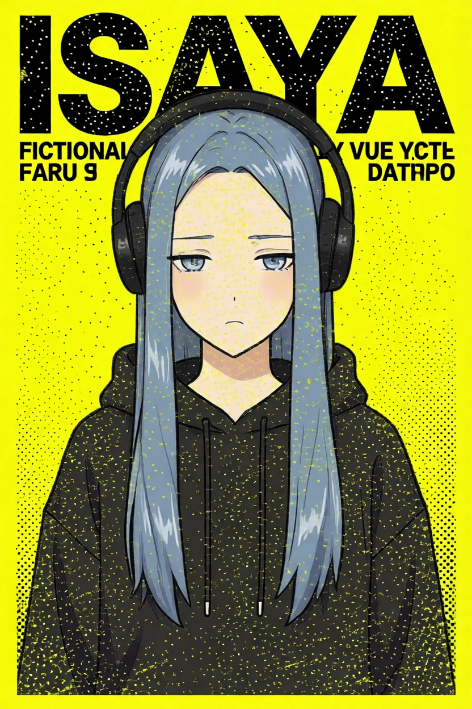
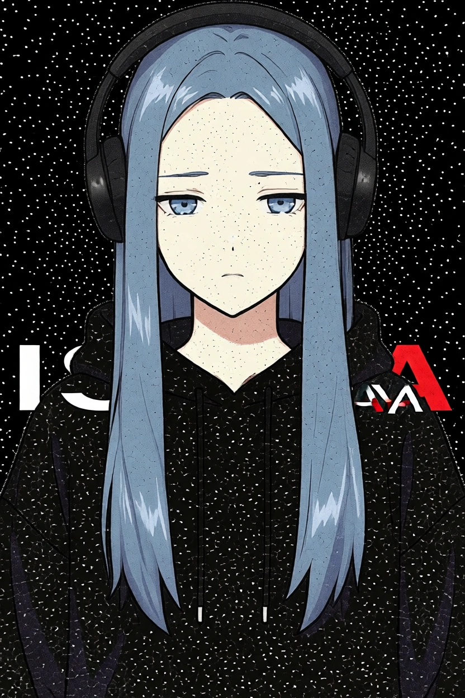
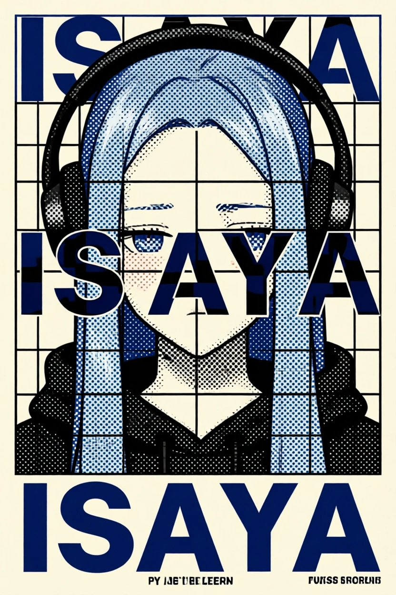
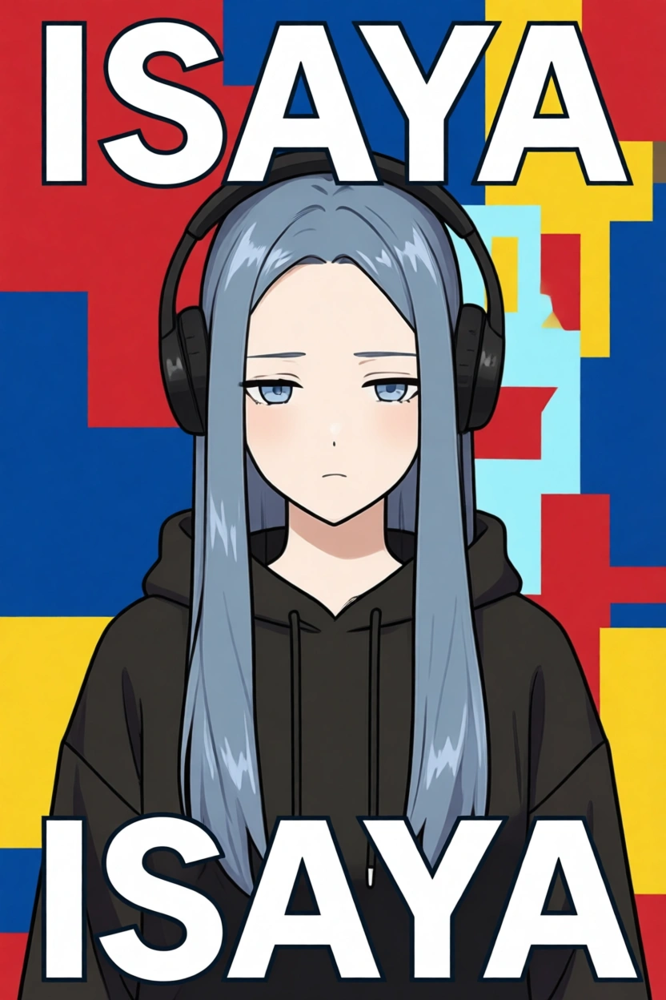

Avatar poster review
Four sequential transit generations using one fixed reference avatar. This is a static HTML review artifact, independent of the React app.
Identity anchor
The same synthetic reference is sent as ref_url for every generation.

Long blue hair · blue eyes · black headphones · subdued expression · black hoodie
The same person survives all four systems.
Identity is much stronger after passing the original avatar image directly to img2img. These outputs inherit the 2:3 ratio of this old test fixture; platform user avatars are 1:1, so this is not a platform-ratio failure.

PORTRAIT / HAZARDFace, hair, eyes, headphones, and hoodie hold. Lettering is noisy; ratio follows the old fixture.

PORTRAIT / XEROXMost legible face and strongest screenprint feel. ISAYA is fragmented.

SILHOUETTE / SWISSFace remains unmistakable, but the large word crosses the eyes.

ABSTRACT / COLOR BLOCKExperimental color blocks with readable face, hair, headphones, hoodie, and expression.
Next constraints to solve
This archived test reference is 832×1248. Real platform avatars are 1:1, so these 2:3 outputs are not evidence of a production ratio bug.
Prompt constraints reduce collisions but do not fully prevent oversized type from crossing the eyes.
Direct avatar reference works. Color-block and xerox are the best balance of likeness and poster language.